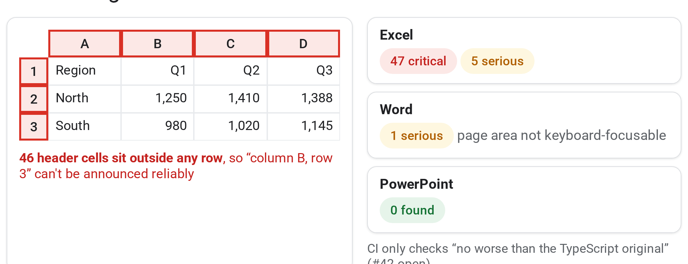
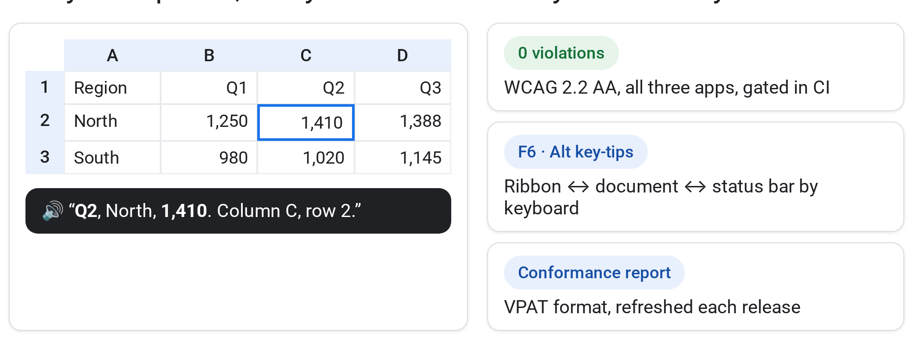
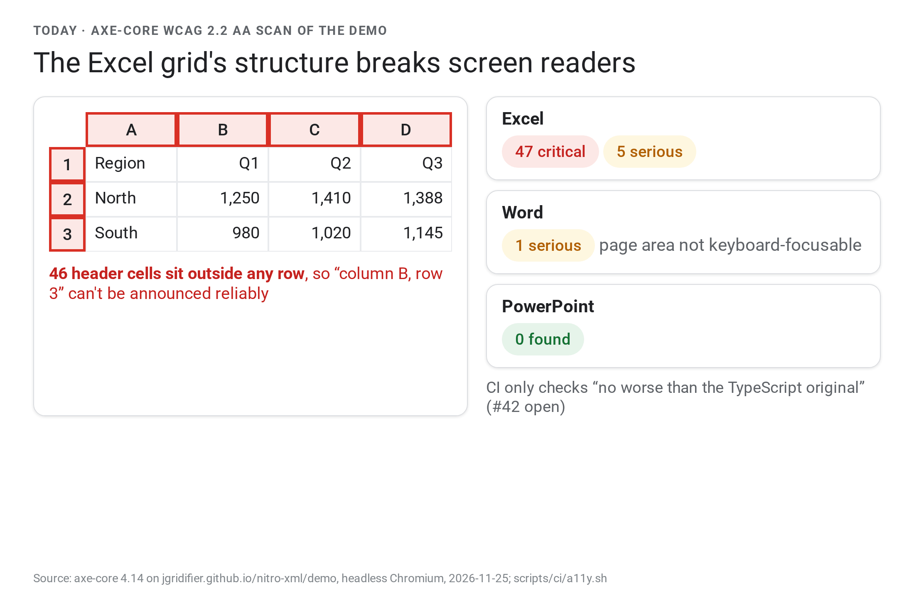
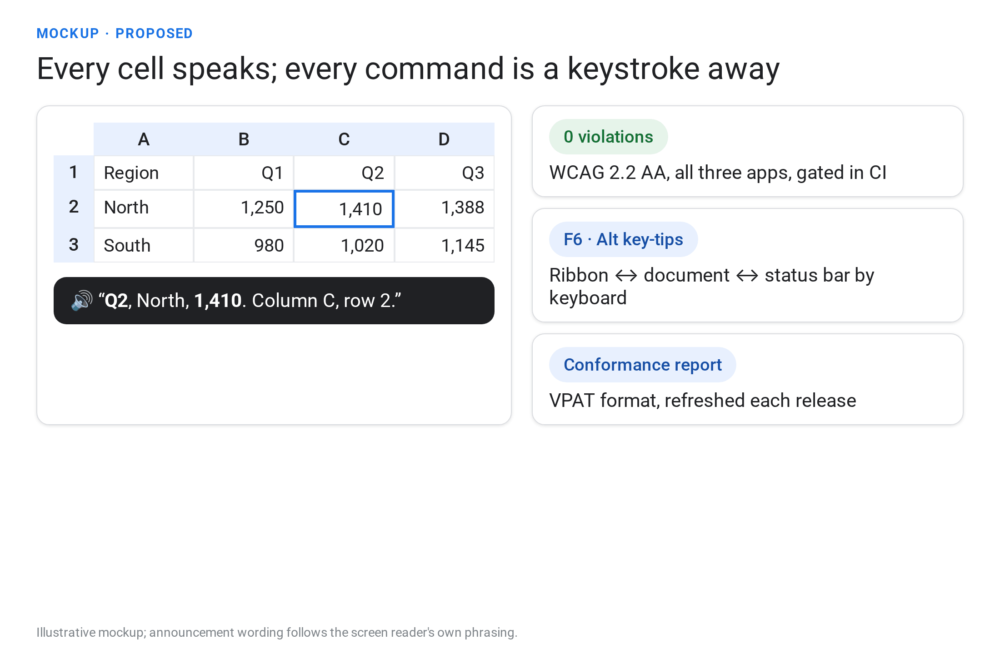

Accessibility you can put on a procurement form: WCAG 2.2 AA in all three apps, a spreadsheet grid screen readers understand, and a published conformance report
New strategic bet (2026-11-25). Finishes and goes beyond #42 (open).
Approve: tap 👍 on the issue · Decline: tap 👎
Close-up of the change




Full screen


Today an axe-core WCAG 2.2 AA scan of the demo finds 47 critical and 5 serious problems in Excel, 1 serious in Word and none in PowerPoint. The Excel grid's row and column headers sit outside any row, so a screen reader can't reliably say "B3, Revenue" as you move.


Mockup: every cell announces its column header, row and value; the ribbon and the document are reachable by keyboard alone; a CI gate holds zero WCAG 2.2 AA violations; and a public conformance report links from the README.
Tap an image to open it full size.
Why
Big companies, governments and universities can't buy or embed a document viewer without accessibility paperwork: Section 508 in the US, EN 301 549 and the European Accessibility Act in Europe. Microsoft and Google publish conformance reports for their web apps; Google's public reports for Docs, Sheets and Slides cover WCAG 2.1. Nitro's gate today only checks that it is no worse than the TypeScript project it was ported from (#42 is still open), and the Excel grid fails basic ARIA structure. Being the embeddable Office engine with a clean WCAG 2.2 AA record and a public report turns accessibility from a blocker into a reason to choose Nitro.
Who it wins
Embedding developers in regulated companies first: their app can't ship to employees or customers until the component passes an accessibility review, and every finding is theirs to fix. Then users who rely on screen readers, keyboard-only use or zoom, in all three apps.
Phased plan
Each milestone ships on its own.
- M1 · Zero violations, gated in CI (about 1 week)Fix today's findings: a valid grid structure (headers inside rows, aria-rowindex/colindex on cells), ribbon accessible names that include the visible label, a 24 px Zoom slider target, and a focusable Word page area. Turn #42's differential gate into an absolute one: zero serious or critical WCAG 2.2 AA violations on every fixture.
- M2 · Screen-reader-native Excel grid (1–2 weeks)Moving the active cell announces column header, row header and value (or the formula, on request) through the grid's own semantics, with no extra live-region spam. Selection size, merged cells and frozen panes are announced. Scripted NVDA and VoiceOver checks per docs/a11y-manual.md.
- M3 · Keyboard and reading order in Word and PowerPoint (1–2 weeks)F6 cycles ribbon, document and status bar; Alt key-tips reach every ribbon command; Word headings, lists and tables, and PowerPoint slide titles and alt text, come through in reading order. Focus is always visible (WCAG 2.2 focus-appearance and target-size checks).
- M4 · Published conformance report (3–5 days)A VPAT-format conformance report for WCAG 2.2 AA in docs/, regenerated each release from the CI results plus a manual pass, linked from the README and the npm page.
Evidence
- axe-core 4.14 (WCAG 2.0/2.1/2.2 A and AA rules) on the demo: Excel 47 critical (46 headers with no row parent, 1 grid with invalid children) and 5 serious (4 ribbon names that don't match their labels, 1 Zoom slider at 112×16 px). Word: 1 serious (scrollable page area not keyboard-focusable). PowerPoint: 0.Source: axe-core run on jgridifier.github.io/nitro-xml/demo/{xlsx,docx,pptx}-full.html, headless Chromium, 2026-11-25
- The a11y CI gate is differential: it allows anything the upstream TypeScript project also does ("zero new serious/critical vs upstream TS"). Issue #42, whose acceptance criteria require zero serious or critical violations, is still open.Source: scripts/ci/a11y.sh and tests/a11y/allowlist.mjs, main 028ebf9; issue #42
- main has no branch protection, so the a11y job is not a required check.Source: GitHub API, branches/main/protection, 2026-11-25
- Microsoft publishes Accessibility Conformance Reports for its products against WCAG, Section 508 and EN 301 549.Source: microsoft.com/accessibility/conformance-reports
- Google's published reports for Docs (April 2023), Sheets (October 2023) and Slides (August 2023) cover WCAG 2.1 A and AA, Section 508 and EN 301 549, with some "Partially Supports" findings.Source: Google Accessibility Conformance Reports, google.com/accessibility/customers-partners
Definition of done
- axe-core reports zero serious or critical WCAG 2.2 AA violations on every a11y fixture in all three apps, and scripts/ci/a11y.sh fails on any (no upstream allowance).
- In the Excel grid, NVDA and VoiceOver announce column header, row and value on every arrow key, including merged cells and frozen panes (scripted checks plus a recorded manual pass).
- Every ribbon command and the document area in all three apps is reachable and operable by keyboard alone, with visible focus.
- docs/ has a WCAG 2.2 AA conformance report (VPAT format), linked from the README, refreshed each release.
- Eager loader under 17,408 B. Visual parity and interaction suites unchanged. All required checks green.
Approve: tap 👍 on the issue · Decline: tap 👎